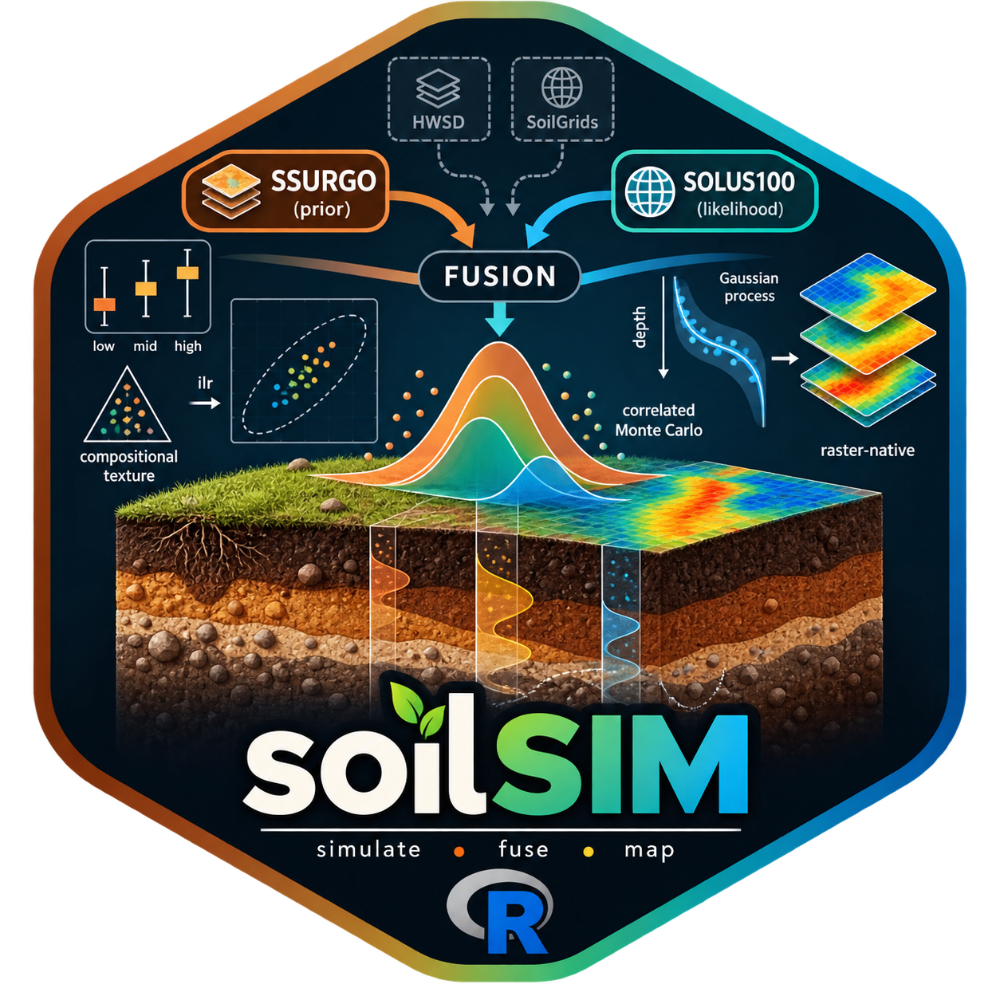

soilSIM is a data-source-agnostic framework for simulating soil properties and fusing estimates from multiple soil data products under uncertainty. Its core statistical machinery - percentile-triplet and arbitrary-percentile distribution fitting, correlated Monte Carlo simulation (including compositional texture handling via isometric log-ratio transforms), Gaussian-process depth-trend modeling, and Bayesian updating/fusion in both scalar and raster-native forms - is designed to work on any low/representative/high triplet or prior/likelihood pair, regardless of where the numbers came from.
soilSIM ships with two concrete data-source adapters, SSURGO and SOLUS100, wired into the fusion pipeline as prior and likelihood sources respectively. The architecture is deliberately split this way so future data sources (e.g. HWSD, SoilGrids) can plug in as new adapters that reuse the same simulation/fusion core rather than duplicating it. See vignette("architecture-overview") for the full picture.
Installation
soilSIM is not on CRAN. Install the development version from GitHub:
# install.packages("remotes")
remotes::install_github("jjmaynard/soilSIM")Quick example
The core building block is a percentile-triplet fit: given a low/representative/high estimate for a soil property (the shape SSURGO tabular data ships in), fit a distribution and sample from it.
library(soilSIM)
clay_fit <- fit_percentile_triplet(l = 12, r = 22, h = 34, family = "normal")
quantile_from_fit(u = c(0.05, 0.5, 0.95), family = clay_fit$family, fit = clay_fit$fit)
#> [1] 11 22 33That single fit is the unit generate_monte_carlo_realizations() scales up into a full, cross-property-correlated Monte Carlo simulation across every horizon in a real SSURGO dataset - see vignette("getting-started-monte-carlo") for the end-to-end pipeline against a real area of interest.
Learn more
-
Get Started:
vignette("getting-started-monte-carlo")walks through the full tabular pipeline (acquisition -> infilling -> Monte Carlo -> statistics -> GP depth trends) against real SSURGO data. Three more vignettes cover profile/depth simulation, available water storage via Van Genuchten/ROSETTA, and multi-source raster fusion (SSURGO x SOLUS100). - Function reference: grouped by pipeline area (data acquisition, distribution fitting, Monte Carlo, GP modeling, Bayesian fusion, and the SSURGO/SOLUS100 adapters) rather than a flat alphabetical list.
- Architecture articles: a deeper dive into each functional area’s internal design, call graphs, and known limitations, for anyone extending the package (e.g. adding a new data-source adapter).
License
MIT (c) Jonathan Maynard - see LICENSE.md.